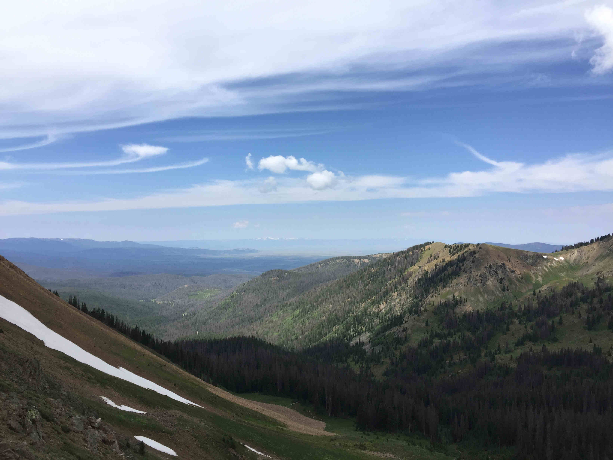

About Luke Burford

Hello! My name is Luke Burford and I am a Colorado native studying Computer Science at Colorado State University and a beer enthusiast.
I was interested in creating a website that would help create the perfect drinking itinerary. Since Colorado has so many wonderful breweries and bars, it’s easy for people to get overwhelmed with the possible pubs to visit.
My website aims to make an easier way to plan your crawl by providing a list of all the registered breweries and the best way to get between them, whether you’re going by car, bike, or bus!